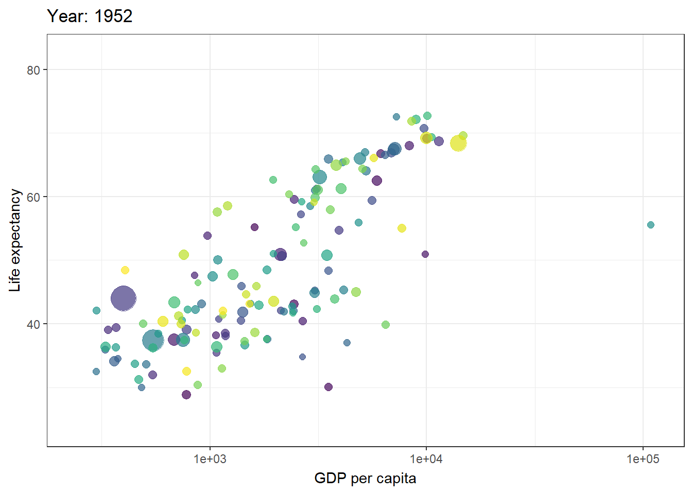
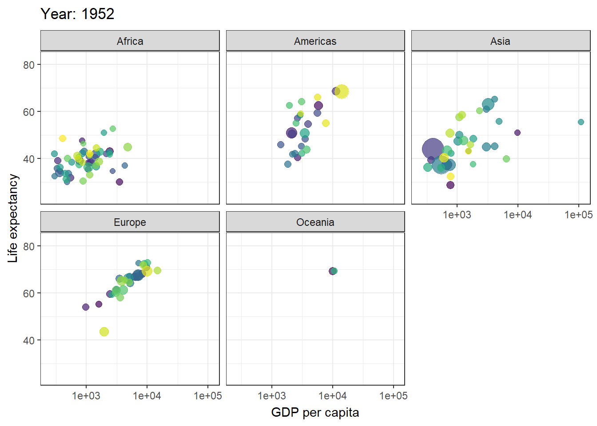
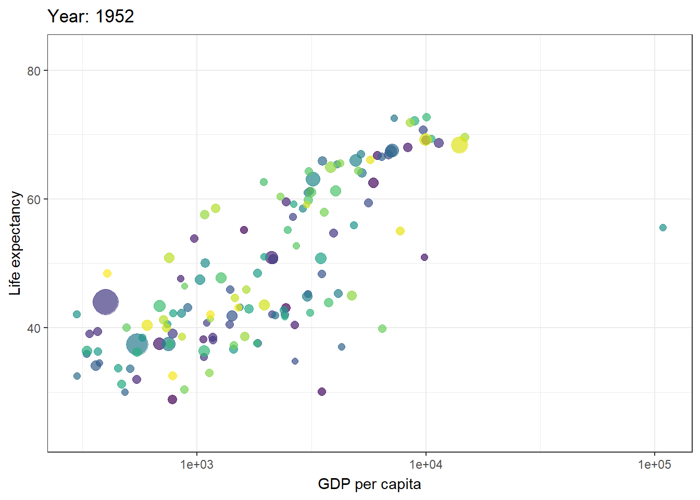
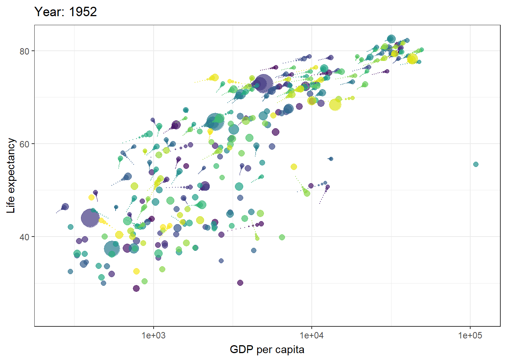
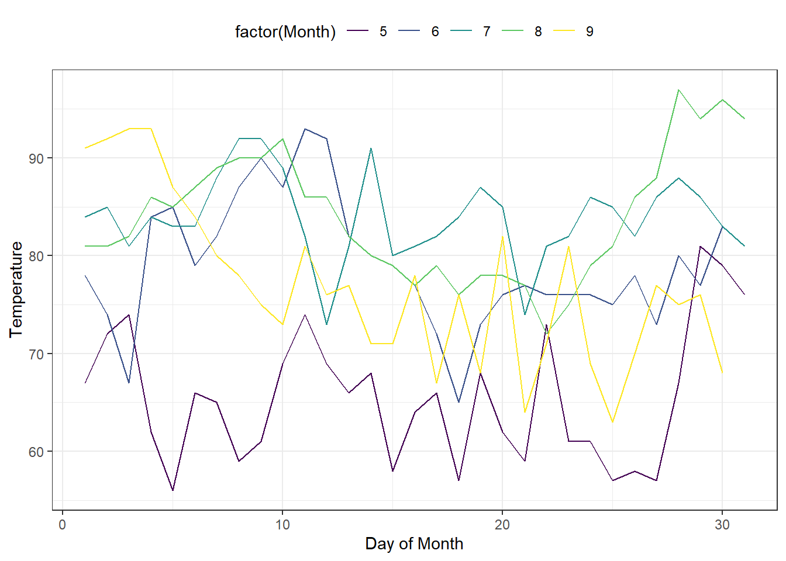
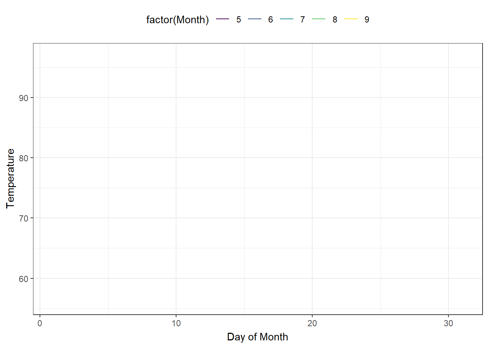
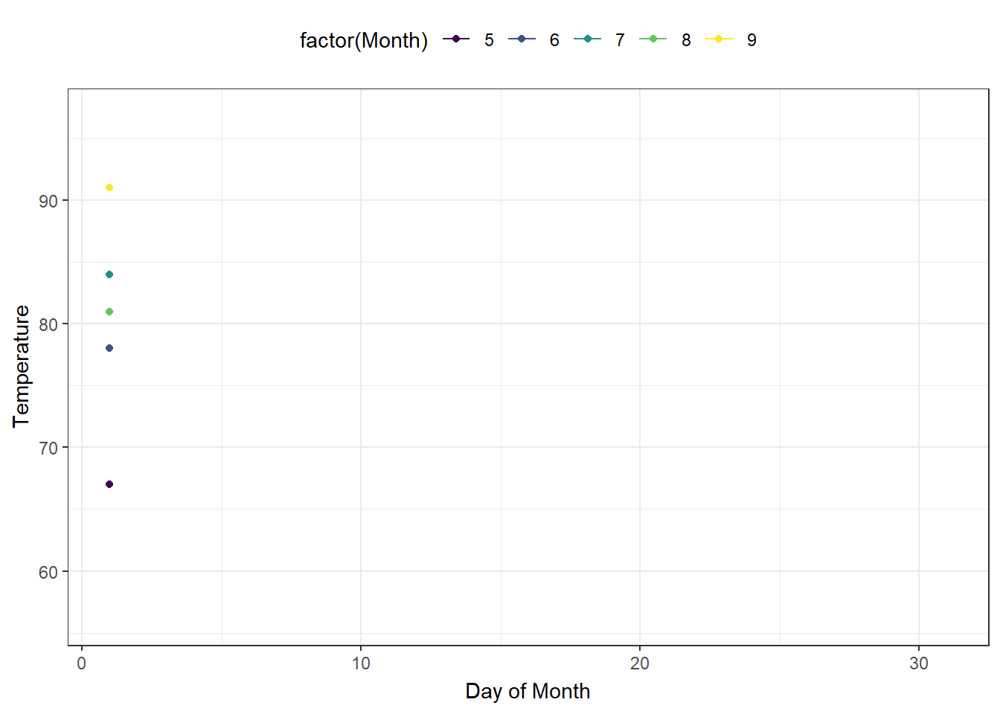
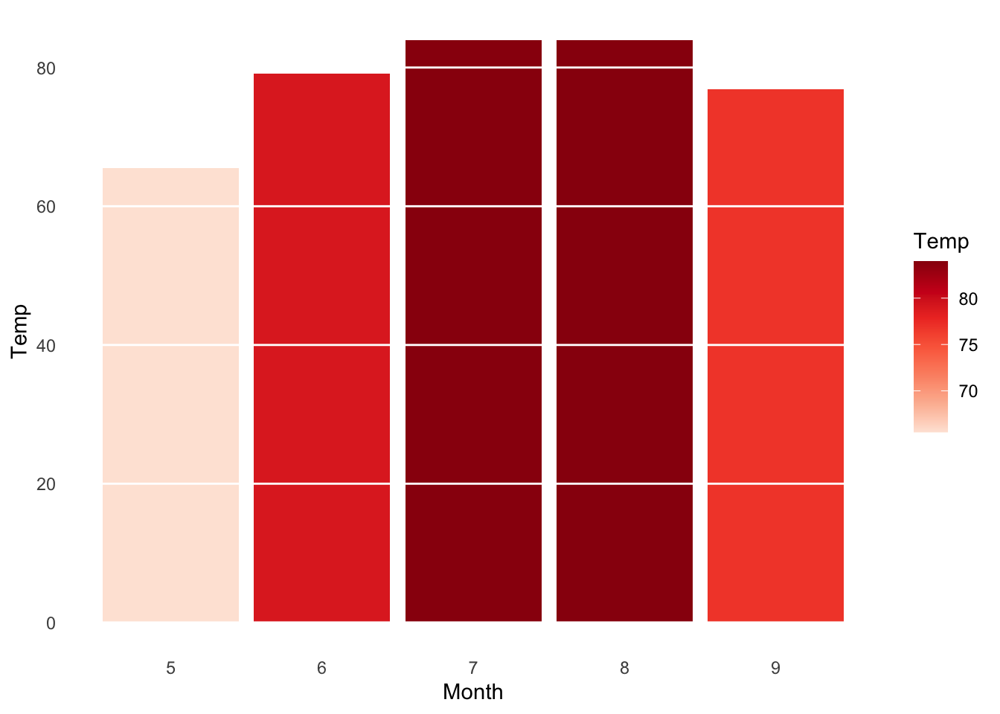
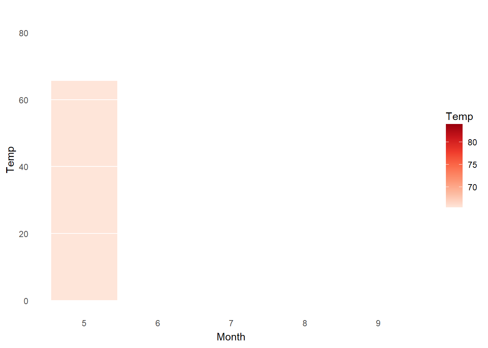
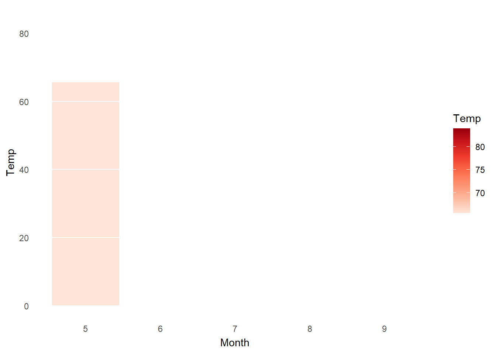

Animation
gganimate is a package for creating animated ggplots. It provides a range of new functionality that can be added to the plot object in order to customize how it should change with time.
Key features of gganimate:
- transitions: you want your data to change
- views: you want your viewpoint to change
- shadows: you want the animation to have memory
Many thanks to Alboukadel Kassambara for allowing us to use his tutorial in this section.
Set Up
Load required packages and set the default ggplot2 theme to theme_bw():
head(gapminder)# A tibble: 6 × 6
country continent year lifeExp pop gdpPercap
<fct> <fct> <int> <dbl> <int> <dbl>
1 Afghanistan Asia 1952 28.8 8425333 779.
2 Afghanistan Asia 1957 30.3 9240934 821.
3 Afghanistan Asia 1962 32.0 10267083 853.
4 Afghanistan Asia 1967 34.0 11537966 836.
5 Afghanistan Asia 1972 36.1 13079460 740.
6 Afghanistan Asia 1977 38.4 14880372 786.Transition through distinct states in time
Begin with a static plot:
p <- ggplot(gapminder,
aes(x = gdpPercap, y=lifeExp, size = pop, color = country)) +
geom_point(show.legend = FALSE, alpha = 0.7) +
scale_color_viridis_d() +
scale_size(range = c(2, 12)) +
scale_x_log10() +
labs(x = "GDP per capita", y = "Life expectancy")
p
Basics
Key R function: transition_time(). The transition length between the states will be set to correspond to the actual time difference between them.
Label variables: frame_time. Gives the time that the current frame corresponds to.
p + transition_time(year) +
labs(title = "Year: {frame_time}")
Create facets by continent
p + facet_wrap(~continent) +
transition_time(year) +
labs(title = "Year: {frame_time}")
Let the view follow the data in each frame
p + transition_time(year) +
labs(title = "Year: {frame_time}") +
view_follow(fixed_y = TRUE)
Show preceding frames with gradual falloff
This shadow is meant to draw a small wake after data by showing the latest frames up to the current. You can choose to gradually diminish the size and/or opacity of the shadow. The length of the wake is not given in absolute frames as that would make the animation susceptible to changes in the framerate. Instead it is given as a proportion of the total length of the animation.
p + transition_time(year) +
labs(title = "Year: {frame_time}") +
shadow_wake(wake_length = 0.1, alpha = FALSE)
Show the original data as background marks
This shadow lets you show the raw data behind the current frame. Both past and/or future raw data can be shown and styled as you want.
p + transition_time(year) +
labs(title = "Year: {frame_time}") +
shadow_mark(alpha = 0.3, size = 0.5)Reveal data along a given dimension
This transition allows you to let data gradually appear, based on a given time dimension. Start with a static plot:
p <- ggplot(airquality,
aes(Day, Temp, group = Month, color = factor(Month))) +
geom_line() +
scale_color_viridis_d() +
labs(x = "Day of Month", y = "Temperature") +
theme(legend.position = "top")
p
Let data gradually appear
- Reveal by day (x-axis)
p + transition_reveal(Day)
- Show points:
p +
geom_point() +
transition_reveal(Day)
- Points can be kept by giving them a unique group:
p +
geom_point(aes(group = seq_along(Day))) +
transition_reveal(Day)Transition between several distinct stages of the data
Data preparation:
mean.temp <- airquality |>
group_by(Month) |>
summarise(Temp = mean(Temp), .groups = "drop_last")
mean.temp# A tibble: 5 × 2
Month Temp
<int> <dbl>
1 5 65.5
2 6 79.1
3 7 83.9
4 8 84.0
5 9 76.9Create a bar plot of mean temperature:
p <- ggplot(mean.temp,
aes(Month, Temp, fill = Temp)) +
geom_col() +
scale_fill_distiller(palette = "Reds", direction = 1) +
theme_minimal() +
theme(panel.grid = element_blank(),
panel.grid.major.y = element_line(color = "white"),
panel.ontop = TRUE)
p
- transition_states():
p + transition_states(Month, wrap = FALSE) +
shadow_mark()
- enter_grow() + enter_fade()
p + transition_states(Month, wrap = FALSE) +
shadow_mark() +
enter_grow() +
enter_fade()
Save your animation
The code to create animations can take a long time to run. So after you have created an animation, you’ll want to save it somewhere so you can display it without having to run the code.
The key function to use is anim_save(), which is very similar to saving static plots using ggsave(). It will save your animation as a gif. The first argument is the filename you want to give the animation and the second is the animation object, so if you have an animation object called p that you wanted to save in a file called “p.gif”, you would save it like so:
anim_save("p.gif", p)If you don’t supply the second argument, anim_save() will default to saving the most recent animation you rendered. So anim_save("animation.gif") will save the most recent animation as “animation.gif”.
If you don’t want to save your gif in the current directory, you can specify a directory using the path argument. Let’s say there is a subdirectory of your working directory called “gifs”. You can thus save “animation.gif” in “gifs” with anim_save("animation.gif", path = "gifs").
After you have created a gif, you can post it online. You can post it to Facebook by selecting “Photo/Video” on your Facebook status or to Twitter by clicking the photo icon.